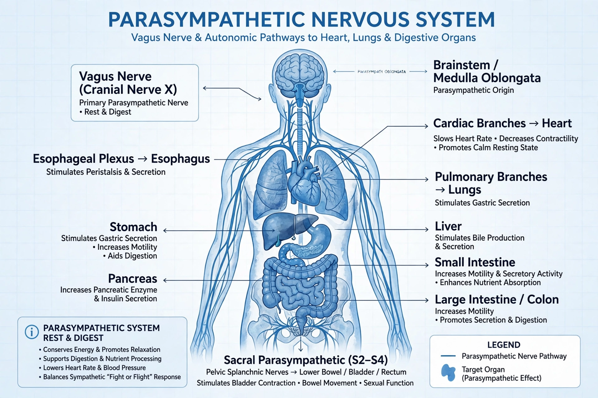

The parasympathetic nervous system (PSNS) is one of the three divisions of the autonomic nervous system, alongside the sympathetic and enteric systems. It conserves energy and promotes "rest and digest" or "feed and breed" functions.

Parasympathetic activation slows heart rate, constricts pupils (miosis), stimulates salivation, digestion and intestinal peristalsis, contracts the bladder and promotes sexual arousal. The vagus nerve (cranial nerve X) supplies most of the thoracic and abdominal viscera. Preganglionic fibres are long and synapse near target organs, where acetylcholine acts on muscarinic receptors.
Drugs that mimic or block parasympathetic action (cholinergics and anticholinergics) are widely used, e.g. atropine, and organophosphate poisoning causes dangerous parasympathetic overactivity (SLUDGE syndrome).
See also: Autonomic nervous system